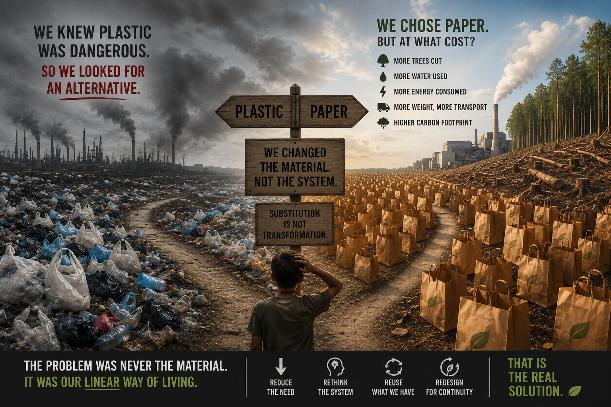
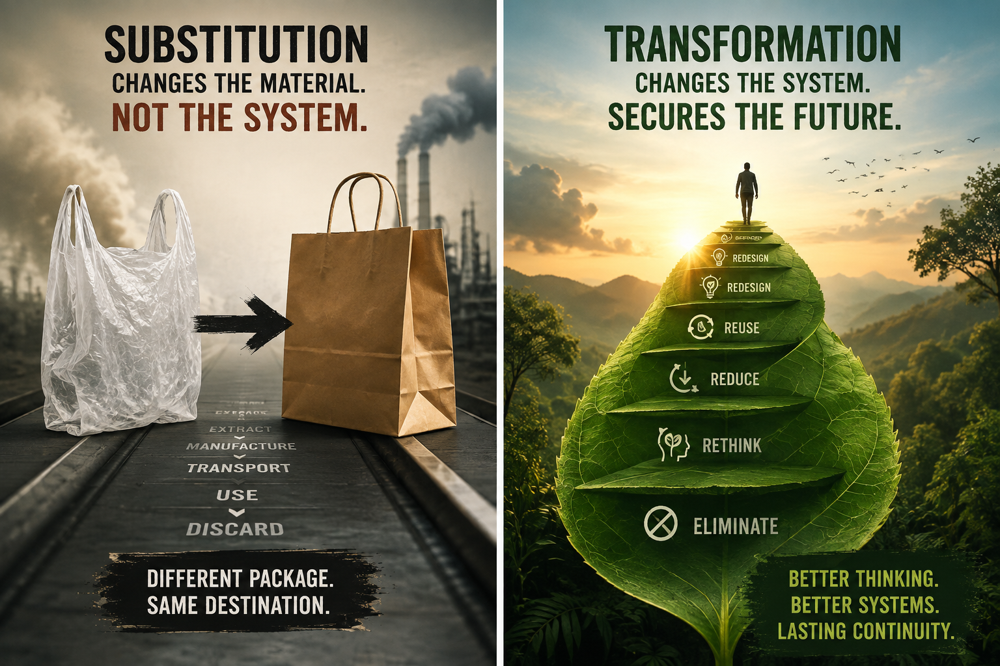

THE TRAP OF KNOWN SUBSTITUTION
Are We Truly Reducing Our Carbon Footprint?
We replaced plastic with paper. But did we replace the problem — or merely the material?
One of the most dangerous loopholes of the modern sustainability era is the illusion of substitution without transformation.
We identify something harmful. We find a different material. We replace the old product with the new one. The market celebrates the transition.
But sometimes, nothing fundamental has changed.
The raw material changes. The packaging changes. The label changes.
The system remains the same.
And that is where the real question begins.

THE COMFORT OF REPLACEMENT
Plastic is a problem.
So we look for alternatives.
Paper bags appear. Biodegradable packaging appear. Plant-based materials appear. New “green” products enter the market.
Some of these alternatives can genuinely reduce environmental impacts under the right conditions.
But there is a question we often fail to ask:
Do we actually need the product in the first place?
If a single-use product remains single-use, have we transformed the system?
Or have we simply created a better-looking form of consumption?
This is the trap of known substitution.
We become so focused on replacing the material that we forget to question the behaviour, infrastructure and economic model that created the demand.
PLASTIC → PAPER
Consider the familiar example of replacing plastic bags with paper bags.
Paper is biodegradable. Paper comes from a renewable biological resource when forests are responsibly managed. Paper can be recycled.
These are important advantages.
But biodegradability alone does not make something environmentally harmless.
Paper production still requires raw materials, energy, water, processing, transportation and infrastructure.
And because paper products are generally heavier and bulkier than comparable plastic products, transportation and material efficiency also matter.
So the question should not simply be:
“Which bag is greener?”
The deeper question is:
“Why do we need billions of bags to be produced, transported, used briefly and discarded at all?”
That is a completely different question.
And perhaps a much more uncomfortable one.
WE ARE VERY GOOD AT REPLACING THINGS
Our economy has become remarkably efficient at substitution.
When one resource becomes problematic, expensive or restricted, we search for another.
When one material is criticised, another enters the market.
When one technology creates environmental damage, we develop a new technology around a different resource.
This is innovation.
But it is not necessarily transformation.
Because if the underlying architecture remains:
EXTRACT → MANUFACTURE → CONSUME → DISCARD
we have not escaped the linear economy.
We have simply changed what flows through the pipeline.
THE BETTER KIND OF TRASH
This is where sustainability thinking needs to become more courageous.
We often ask:
Can we invent a better product?
Perhaps we should first ask:
- Can we eliminate the need for the product?
- Then: Can we reuse what already exists?
- Then: Can we extend its life?
- Then: Can we redesign the system so that waste is prevented?
Only after these questions should substitution become the obvious answer.
Because inventing a better kind of trash — even if it is biodegradable — can still mean that we are treating the symptom rather than the system.
- Biodegradable waste is still a material flow.
- Recyclable waste is still a material flow.
- “Green” waste is still waste.
The environmental burden has not disappeared merely because the label has changed.

FROM SUBSTITUTION TO TRANSFORMATION
Perhaps the hierarchy of green thinking should be rewritten.
DON’T BEGIN WITH:
What can replace this?
BEGIN WITH:
Can we eliminate it?
If not:
Can we reduce it?
If not:
Can we reuse it?
If not:
Can we redesign it for a longer life?
If replacement is genuinely necessary:
Which alternative creates the lowest overall ecological burden across its life cycle?
That is transformation.
It moves the conversation from material selection to system design.
CARBON IS ONLY ONE PART OF THE STORY
There is another danger.
We increasingly use carbon footprint as the primary language of environmental responsibility.
Carbon matters enormously.
But Nature does not operate on carbon alone.
A product can have a lower carbon footprint and still place pressure on:
- Water.
- Land.
- Forests.
- Biodiversity.
- Minerals.
- Soil.
- Oceans.
- Energy.
If solving one environmental problem intensifies another, can we honestly call that progress?
Perhaps the more complete question is not:
“Did we reduce carbon?”
but:
“Did we reduce the total ecological burden?”
That is a much harder question.
And perhaps that is exactly the question we need.
NATURE DOES NOT PRACTISE LINEAR SUBSTITUTION
Look closely at Nature.
A fallen leaf does not become “waste” in the way our economy defines waste.
It becomes something else.
- Nutrients return to soil.
- Microorganisms participate.
- Carbon moves through biological systems.
- New growth emerges.
Nature continuously transforms materials within interconnected cycles.
There is no permanent “throw-away” category in the natural system.
Nature does not solve a shortage of one material by simply creating another mountain of unusable material somewhere else.
It redesigns the relationship.
That may be one of the greatest lessons we have missed.
THE REAL GREEN TRANSITION
Perhaps the greatest sustainability transition is therefore not:
- Plastic → Paper
- or Fossil → Renewable
- or Old Technology → New Technology
Those are important transitions.
But the deeper transition is:
- LINEAR → CIRCULAR
- DISPOSABLE → REUSABLE
- EXTRACTION → REGENERATION
- CONSUMPTION → RESPONSIBLE USE
- SUBSTITUTION → TRANSFORMATION
That is where sustainability becomes more than a change of materials.
It becomes a change of thinking.
THE CONTINUITY TEST
Before celebrating any “green replacement”, perhaps every product and policy should pass a simple test:
- What did we eliminate?
- What did we reduce?
- What new resources did we require?
- What new waste did we create?
- What happened to water consumption?
- What happened to land and biodiversity?
- What happens at the end of life?
And finally:
What are we leaving behind for the next generation?
That last question may be the most important sustainability metric of all.
Because sustainability is not simply about making today’s footprint smaller.
It is about ensuring that tomorrow still has a place to stand.
THE FINAL THOUGHT
We should not stop replacing harmful materials.
We should stop believing that replacement alone is transformation.
A greener material can be useful.
A greener technology can be revolutionary.
But neither automatically creates a greener system.
The real innovation begins when we stop asking:
“What can we substitute?”
and start asking:
“What can we eliminate, reduce, reuse, regenerate and redesign?”
Because the future does not need merely better products to throw away.
It needs better systems that make throwing away unnecessary.
Don’t just change the material. Change the relationship with the material.
That is the difference between substitution and transformation.
And perhaps, that is the difference between sustainability and continuity.